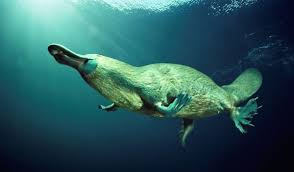
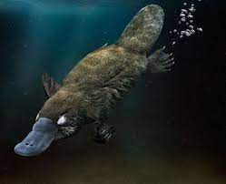

• O R N I T O R R I N C O •
• • • • •
SOBRE
• • • • • • • •
ALIMENTAÇÃO
• • • • • • • •
HABITÁT
• • • • • • • •
CURIOSIDADES • • • • •
HABITÁT
Os ornitorrincos são mamíferos semi-aquáticos, portanto devem viver perto de fontes de água. Esses pequenos mamíferos preferem
pequenos córregos e rios, onde podem caçar presas no leito do rio. Eles podem ser encontrados em habitats que variam de terras
altas frias a florestas tropicais. Esses mamíferos podem ser encontrados em toda a costa leste da Austrália, ao norte da
Península do Cabo York e ao sul de Victoria. Eles também podem ser encontrados na Tasmânia, e uma pequena população vive na
Ilha Kangaroo. Para mais informações sobre clique aqui.
COMPORTAMENTOS
O ornitorrinco é principalmente noturno ou crepuscular, o que significa que eles são ativos à noite, ao entardecer e ao
amanhecer. Eles podem ser vistos durante o dia, especialmente em dias particularmente nublados. Os cientistas acreditam que os
ornitorrincos têm um território de aproximadamente três quilômetros e os machos podem se sobrepor a territórios com várias
fêmeas. Eles vivem, dormem e dão à luz dentro de túneis na margem do rio.


Os ornitorrinco se reproduzem entre os meses de junho e outubro. Acredita-se que um ornitorrinco masculino acasalará com várias
fêmeas diferentes durante a estação reprodutiva.
Após a reprodução, o ornitorrinco feminino desenvolve os ovos por 28 dias antes de depositá-los. Ela incubará os ovos por mais
10 dias antes de eclodirem. Os ornitorrinco do bebê permanecerão na toca por cerca de quatro meses, depois serão desmamados e
começarão a emergir e explorar.